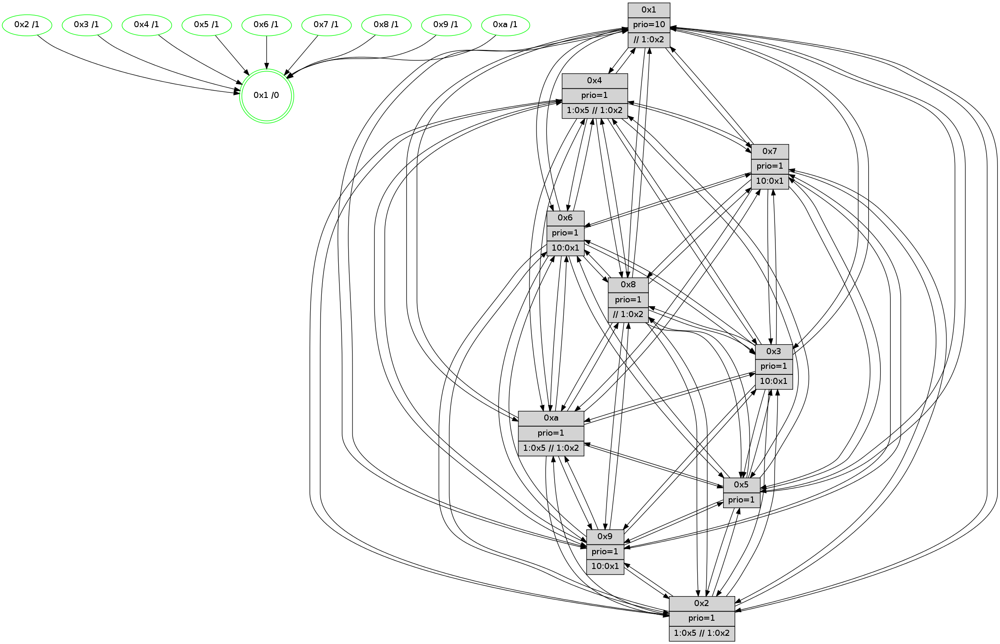

>> << IDX [start] -100 -25 -5 +0 +5 +25 +100 [660.094218016]
 Previous packets
----------------------------------------------------------------------
655.365430 beacon01(faad) #0 coord=01,02,03,04,05,06,07,0a,09,08 cycle=688.0ms assoc
-- color-indic=1 64 45 4a
655.375413 beacon02(faad) #0 coord=01,02,03,04,05,06,07,0a,09,08 cycle=688.0ms assoc 64 d6 7b
655.385412 beacon03(faad) #0 coord=01,02,03,04,05,06,07,0a,09,08 cycle=688.0ms assoc 64 ac 36
655.395413 beacon04(faad) #0 coord=01,02,03,04,05,06,07,0a,09,08 cycle=688.0ms assoc 64 db dc
655.405412 beacon05(faad) #0 coord=01,02,03,04,05,06,07,0a,09,08 cycle=688.0ms assoc 64 a1 91
655.415414 beacon06(faad) #0 coord=01,02,03,04,05,06,07,0a,09,08 cycle=688.0ms assoc 64 2f 46
655.425414 beacon07(faad) #0 coord=01,02,03,04,05,06,07,0a,09,08 cycle=688.0ms assoc 64 55 0b
655.435417 beacon0a(faad) #0 coord=01,02,03,04,05,06,07,0a,09,08 cycle=688.0ms assoc 64 24 00
655.445417 beacon09(faad) #0 coord=01,02,03,04,05,06,07,0a,09,08 cycle=688.0ms assoc 64 aa d7
655.455419 beacon08(faad) #0 coord=01,02,03,04,05,06,07,0a,09,08 cycle=688.0ms assoc 64 d0 9a
655.466648 [Hello(10): seq=353 sym=6,2,3,8,9,5,7,4,1 sysInfo= stat=6:13,3,3,1/2:11,15,9,1/3:2,5,8,3/8:13,4,14,6/9:14,1,12,4/5:2,10,13,7/7:5,2,15,2/4:12,5,10,6/1:9,6,15,1]
655.469761 [Color(3) seq=85 @0:0 prio=1 >10.@1,1.@2,1.@5,1.@8]
655.471603 [Color(4) seq=64 @0:0 prio=1 >1.@5 >>1.@2,1.@3,1.@5]
655.473363 [Hello(9): seq=364 sym=5,2,3,4,7,6,8,10,1 sysInfo=hasWarning stat=5:10,9,15,8/2:13,1,4,5/3:14,13,12,6/4:0,12,14,5/7:10,0,4,3/6:3,9,0,5/8:2,1,5,2/10:1,11,2,7/1:4,3,1,1]
655.477587 [Hello(8): seq=364 sym=5,2,3,4,7,6,9,10,1 sysInfo=hasWarning,coloring-mode-on,ColoringModeIndicationCalled stat=5:7,8,1,6/2:14,14,8,1/3:13,8,15,8/4:3,4,2,6/7:12,0,2,5/6:6,4,14,6/9:15,0,2,5/10:10,7,0,6/1:13,11,0,0]
655.480306 [Color(6) seq=90 @0:0 prio=1 >10.@1,1.@2,1.@3,1.@5]
655.482261 [Hello(2): seq=417 sym=4,5,7,6,3,9,8,10,1 sysInfo=hasWarning stat=4:9,4,15,4/5:14,9,11,6/7:10,7,3,3/6:0,15,1,4/3:1,15,12,1/9:2,13,13,1/8:10,6,10,4/10:9,5,13,4/1:6,15,10,1]
655.485239 [Hello(5): seq=421 sym=7,6,4,3,1,9,8,10,2 sysInfo= stat=7:4,11,3,3/6:6,13,2,5/4:13,3,13,5/3:10,1,11,4/1:7,9,15,1/9:4,4,0,3/8:5,13,10,4/10:2,15,1,5/2:1,11,0,4]
655.487786 [Color(9) seq=69 @0:0 prio=1 >10.@1,1.@2,1.@3,1.@5]
655.489538 [Color(7) seq=73 @0:0 prio=1 >10.@1,1.@2,1.@3,1.@5]
655.491411 [Color(2) seq=66 @0:0 prio=1 >1.@5 >>1.@2,1.@3,1.@5]
655.497339 [STC(1) #0.51 tree-change,inconsistent-stability,stable,to-color d=0]
655.498885 [Color(5) seq=74 @0:0 prio=1]
655.500690 [Color(1) seq=101 @0:0 prio=10 >>1.@2,1.@3,1.@5]
----------------------------------------------------------------------
656.153563 beacon01(faad) #0 coord=01,02,03,04,05,06,07,0a,09,08 cycle=688.0ms assoc
-- color-indic=1 64 81 44
656.163546 beacon02(faad) #0 coord=01,02,03,04,05,06,07,0a,09,08 cycle=688.0ms assoc 64 12 75
656.173546 beacon03(faad) #0 coord=01,02,03,04,05,06,07,0a,09,08 cycle=688.0ms assoc 64 68 38
656.183546 beacon04(faad) #0 coord=01,02,03,04,05,06,07,0a,09,08 cycle=688.0ms assoc 64 1f d2
656.193546 beacon05(faad) #0 coord=01,02,03,04,05,06,07,0a,09,08 cycle=688.0ms assoc 64 65 9f
656.203546 beacon06(faad) #0 coord=01,02,03,04,05,06,07,0a,09,08 cycle=688.0ms assoc 64 eb 48
656.213547 beacon07(faad) #0 coord=01,02,03,04,05,06,07,0a,09,08 cycle=688.0ms assoc 64 91 05
656.223551 beacon0a(faad) #0 coord=01,02,03,04,05,06,07,0a,09,08 cycle=688.0ms assoc 64 e0 0e
656.233551 beacon09(faad) #0 coord=01,02,03,04,05,06,07,0a,09,08 cycle=688.0ms assoc 64 6e d9
656.243551 beacon08(faad) #0 coord=01,02,03,04,05,06,07,0a,09,08 cycle=688.0ms assoc 64 14 94
656.255003 [Hello(3): seq=421 sym=1,7,6,2,4,8,9,10,5 sysInfo= stat=1:7,1,2,1/7:2,5,15,3/6:8,14,13,6/2:4,9,14,7/4:6,1,15,4/8:13,7,12,2/9:0,3,3,6/10:3,15,14,5/5:1,8,0,6]
656.257872 [STC(6)->1 #0.51 tree-change,inconsistent-stability,stable,to-color d=1]
656.259444 [STC(3)->1 #0.51 tree-change,inconsistent-stability,stable,to-color d=1]
656.260746 [STC(9)->1 #0.51 tree-change,inconsistent-stability,stable,to-color d=1]
656.263402 [Hello(1): seq=330 sym=4,2,9,5,10,3,8,6,7 sysInfo=coloring-mode-on,ColoringModeRequestCalled stat=4:7,6,2,0/2:0,5,7,8/9:3,7,1,0/5:13,1,8,9/10:14,8,9,7/3:0,8,13,9/8:5,2,11,6/6:1,4,8,5/7:4,8,12,7]
656.266520 [STC(8)->1 #0.51 tree-change,inconsistent-stability,stable,to-color d=1]
656.268382 [STC(2)->1 #0.51 tree-change,inconsistent-stability,stable,to-color d=1]
656.270389 [Color(8) seq=101 @0:0 prio=1 >>1.@2,1.@3,1.@5]
656.277497 [Hello(7): seq=421 sym=2,3,5,6,4,8,9,10,1 sysInfo=hasWarning stat=2:8,11,8,9/3:13,7,4,8/5:9,0,3,10/6:0,14,3,1/4:15,7,5,6/8:15,8,6,4/9:11,9,4,8/10:11,15,6,7/1:9,2,0,1]
656.279940 [Hello(4): seq=421 sym=5,7,6,2,3,9,8,10,1 sysInfo= stat=5:14,1,0,6/7:9,10,2,2/6:2,0,4,6/2:5,5,14,6/3:13,15,11,4/9:12,9,15,3/8:4,14,1,7/10:1,15,2,6/1:2,4,0,1]
656.282986 [STC(7)->1 #0.51 tree-change,inconsistent-stability,stable,to-color d=1]
656.285021 [STC(4)->1 #0.51 tree-change,inconsistent-stability,stable,to-color d=1]
656.286432 [STC(10)->1 #0.51 tree-change,inconsistent-stability,stable,to-color d=1]
656.289668 [Color(10) seq=79 @0:0 prio=1 >1.@5 >>1.@2,1.@3,1.@5]
----------------------------------------------------------------------
656.941693 beacon01(faad) #0 coord=01,02,03,04,05,06,07,0a,09,08 cycle=688.0ms assoc
-- color-indic=1 64 3d 41
656.951674 beacon02(faad) #0 coord=01,02,03,04,05,06,07,0a,09,08 cycle=688.0ms assoc 64 ae 70
656.961676 beacon03(faad) #0 coord=01,02,03,04,05,06,07,0a,09,08 cycle=688.0ms assoc 64 d4 3d
656.971678 beacon04(faad) #0 coord=01,02,03,04,05,06,07,0a,09,08 cycle=688.0ms assoc 64 a3 d7
656.981676 beacon05(faad) #0 coord=01,02,03,04,05,06,07,0a,09,08 cycle=688.0ms assoc 64 d9 9a
656.991675 beacon06(faad) #0 coord=01,02,03,04,05,06,07,0a,09,08 cycle=688.0ms assoc 64 57 4d
657.001676 beacon07(faad) #0 coord=01,02,03,04,05,06,07,0a,09,08 cycle=688.0ms assoc 64 2d 00
657.011681 beacon0a(faad) #0 coord=01,02,03,04,05,06,07,0a,09,08 cycle=688.0ms assoc 64 5c 0b
657.021682 beacon09(faad) #0 coord=01,02,03,04,05,06,07,0a,09,08 cycle=688.0ms assoc 64 d2 dc
657.031680 beacon08(faad) #0 coord=01,02,03,04,05,06,07,0a,09,08 cycle=688.0ms assoc 64 a8 91
657.043872 [Hello(8): seq=365 sym=5,2,3,4,7,6,9,10,1 sysInfo=hasWarning,coloring-mode-on,ColoringModeIndicationCalled stat=5:8,9,1,6/2:15,15,8,1/3:13,8,15,8/4:3,4,3,6/7:13,1,3,5/6:7,5,14,6/9:15,1,2,5/10:10,8,1,6/1:13,12,1,0]
657.046848 [Hello(9): seq=365 sym=5,2,3,4,7,6,8,10,1 sysInfo=hasWarning stat=5:10,10,15,8/2:13,2,5,5/3:14,14,12,6/4:0,12,15,5/7:11,1,5,3/6:3,9,0,5/8:2,2,6,2/10:2,12,3,7/1:5,4,2,1]
657.049832 [Hello(2): seq=418 sym=4,5,7,6,3,9,8,10,1 sysInfo=hasWarning stat=4:9,4,0,4/5:14,10,11,6/7:11,7,4,3/6:0,15,1,4/3:1,0,12,1/9:2,13,13,1/8:10,7,10,4/10:10,6,14,4/1:6,0,11,1]
657.052481 [Color(6) seq=91 @0:0 prio=1 >10.@1,1.@2,1.@3,1.@5]
657.054298 [Color(9) seq=70 @0:0 prio=1 >10.@1,1.@2,1.@3,1.@5]
657.055950 [Color(7) seq=74 @0:0 prio=1 >10.@1,1.@2,1.@3,1.@5]
657.057683 [Hello(5): seq=422 sym=7,6,4,3,1,9,8,10,2 sysInfo= stat=7:5,11,4,3/6:6,13,3,5/4:13,3,14,5/3:10,1,12,4/1:8,10,15,1/9:4,4,1,3/8:5,14,11,4/10:3,0,2,5/2:1,11,1,4]
657.060493 [Color(5) seq=75 @0:0 prio=1]
657.061998 [Hello(10): seq=354 sym=6,2,3,8,9,5,7,4,1 sysInfo= stat=6:14,4,4,1/2:12,0,9,1/3:2,6,8,3/8:14,4,14,6/9:15,2,12,4/5:3,11,13,7/7:5,3,15,2/4:12,6,10,6/1:9,7,0,1]
657.064894 [Color(2) seq=67 @0:0 prio=1 >1.@5 >>1.@2,1.@3,1.@5]
657.066524 [Color(4) seq=65 @0:0 prio=1 >1.@5 >>1.@2,1.@3,1.@5]
657.069410 [Color(3) seq=86 @0:0 prio=1 >10.@1,1.@2,1.@5,1.@8]
657.071663 [Color(1) seq=102 @0:0 prio=10 >>1.@2,1.@3,1.@5]
----------------------------------------------------------------------
657.729823 beacon01(faad) #0 coord=01,02,03,04,05,06,07,0a,09,08 cycle=688.0ms assoc
-- color-indic=1 64 09 59
657.739808 beacon02(faad) #0 coord=01,02,03,04,05,06,07,0a,09,08 cycle=688.0ms assoc 64 9a 68
657.749806 beacon03(faad) #0 coord=01,02,03,04,05,06,07,0a,09,08 cycle=688.0ms assoc 64 e0 25
657.759807 beacon04(faad) #0 coord=01,02,03,04,05,06,07,0a,09,08 cycle=688.0ms assoc 64 97 cf
657.769805 beacon05(faad) #0 coord=01,02,03,04,05,06,07,0a,09,08 cycle=688.0ms assoc 64 ed 82
657.779806 beacon06(faad) #0 coord=01,02,03,04,05,06,07,0a,09,08 cycle=688.0ms assoc 64 63 55
657.789808 beacon07(faad) #0 coord=01,02,03,04,05,06,07,0a,09,08 cycle=688.0ms assoc 64 19 18
657.799812 beacon0a(faad) #0 coord=01,02,03,04,05,06,07,0a,09,08 cycle=688.0ms assoc 64 68 13
657.809811 beacon09(faad) #0 coord=01,02,03,04,05,06,07,0a,09,08 cycle=688.0ms assoc 64 e6 c4
657.819811 beacon08(faad) #0 coord=01,02,03,04,05,06,07,0a,09,08 cycle=688.0ms assoc 64 9c 89
657.830754 [Hello(1): seq=331 sym=4,2,9,5,10,3,8,6,7 sysInfo=coloring-mode-on,ColoringModeRequestCalled stat=4:7,6,3,0/2:0,5,8,8/9:3,7,1,0/5:13,1,8,9/10:14,9,10,7/3:0,8,13,9/8:6,3,12,6/6:1,4,8,5/7:5,8,13,7]
657.833262 [Hello(3): seq=422 sym=1,7,6,2,4,8,9,10,5 sysInfo= stat=1:8,2,2,1/7:3,5,0,3/6:8,14,13,6/2:4,9,15,7/4:6,1,0,4/8:14,8,13,2/9:0,3,4,6/10:3,0,15,5/5:1,8,0,6]
657.835983 [Color(10) seq=80 @0:0 prio=1 >1.@5 >>1.@2,1.@3,1.@5]
657.839002 [Color(8) seq=102 @0:0 prio=1 >>1.@2,1.@3,1.@5]
657.843793 [Hello(4): seq=422 sym=5,7,6,2,3,9,8,10,1 sysInfo= stat=5:14,1,0,6/7:9,10,2,2/6:2,0,4,6/2:5,5,14,6/3:13,0,11,4/9:12,9,15,3/8:5,14,1,7/10:1,0,3,6/1:2,5,0,1]
657.846473 PARSE ERROR************************
Traceback (most recent call last):
File "PacketAnalysis.py", line 167, in showOperaPacket
structPacket = OperaPacketParse.parsePacket(rawPacket)
File "../../pkg-python/HipSens/Core/OperaPacketParse.py", line 461, in parsePacket
return parseHelloMessage(data)
File "../../pkg-python/HipSens/Core/OperaPacketParse.py", line 125, in parseHelloMessage
struct.unpack("!H",linkList[:2])[0])
error: unpack requires a string argument of length 2
48 34 07 00 01 a6 00 02 02 12 02 00 03 00 05 00 06 00 04 00 08 00 09 00 0a 00 01 00 53 04 00 02 00 00 4c 12 98 c8 84 8d a3 1a 13 e0 66 80 46 80 84 9b 77 0c 10 39 4d a6
657.853523 [Hello(6): seq=422 sym=2,3,5,4,7,9,8,10,1 sysInfo= stat=2:15,1,9,6/3:3,9,4,6/5:12,15,1,8/4:4,5,2,0/7:13,7,4,1/9:14,13,3,6/8:8,1,2,5/10:13,1,9,6/1:5,5,13,1]
----------------------------------------------------------------------
658.517954 beacon01(faad) #0 coord=01,02,03,04,05,06,07,0a,09,08 cycle=688.0ms assoc
-- color-indic=1 64 b5 5c
658.527937 beacon02(faad) #0 coord=01,02,03,04,05,06,07,0a,09,08 cycle=688.0ms assoc 64 26 6d
658.537936 beacon03(faad) #0 coord=01,02,03,04,05,06,07,0a,09,08 cycle=688.0ms assoc 64 5c 20
658.547938 beacon04(faad) #0 coord=01,02,03,04,05,06,07,0a,09,08 cycle=688.0ms assoc 64 2b ca
658.557937 beacon05(faad) #0 coord=01,02,03,04,05,06,07,0a,09,08 cycle=688.0ms assoc 64 51 87
658.567937 beacon06(faad) #0 coord=01,02,03,04,05,06,07,0a,09,08 cycle=688.0ms assoc 64 df 50
658.577938 beacon07(faad) #0 coord=01,02,03,04,05,06,07,0a,09,08 cycle=688.0ms assoc 64 a5 1d
658.587943 beacon0a(faad) #0 coord=01,02,03,04,05,06,07,0a,09,08 cycle=688.0ms assoc 64 d4 16
658.597942 beacon09(faad) #0 coord=01,02,03,04,05,06,07,0a,09,08 cycle=688.0ms assoc 64 5a c1
658.607943 beacon08(faad) #0 coord=01,02,03,04,05,06,07,0a,09,08 cycle=688.0ms assoc 64 20 8c
658.620116 [Hello(10): seq=355 sym=6,2,3,8,9,5,7,4,1 sysInfo= stat=6:15,4,4,1/2:12,1,9,1/3:3,7,8,3/8:14,5,14,6/9:15,2,12,4/5:3,11,13,7/7:6,3,15,2/4:13,7,10,6/1:10,8,0,1]
658.622854 [Color(6) seq=92 @0:0 prio=1 >10.@1,1.@2,1.@3,1.@5]
658.631652 [Color(2) seq=68 @0:0 prio=1 >1.@5 >>1.@2,1.@3,1.@5]
658.633993 [Color(4) seq=66 @0:0 prio=1 >1.@5 >>1.@2,1.@3,1.@5]
658.635719 [Color(1) seq=103 @0:0 prio=10 >>1.@2,1.@3,1.@5]
658.642363 [Hello(9): seq=366 sym=5,2,3,4,7,6,8,10,1 sysInfo=hasWarning stat=5:11,11,15,8/2:13,3,5,5/3:15,15,12,6/4:1,13,15,5/7:12,2,5,3/6:4,9,0,5/8:3,3,6,2/10:3,13,3,7/1:6,5,2,1]
658.645809 [Color(9) seq=71 @0:0 prio=1 >10.@1,1.@2,1.@3,1.@5]
----------------------------------------------------------------------
659.306086 beacon01(faad) #0 coord=01,02,03,04,05,06,07,0a,09,08 cycle=688.0ms assoc
-- color-indic=1 64 71 52
659.316068 beacon02(faad) #0 coord=01,02,03,04,05,06,07,0a,09,08 cycle=688.0ms assoc 64 e2 63
659.326068 beacon03(faad) #0 coord=01,02,03,04,05,06,07,0a,09,08 cycle=688.0ms assoc 64 98 2e
659.336070 beacon04(faad) #0 coord=01,02,03,04,05,06,07,0a,09,08 cycle=688.0ms assoc 64 ef c4
659.346068 beacon05(faad) #0 coord=01,02,03,04,05,06,07,0a,09,08 cycle=688.0ms assoc 64 95 89
659.356069 beacon06(faad) #0 coord=01,02,03,04,05,06,07,0a,09,08 cycle=688.0ms assoc 64 1b 5e
659.366069 beacon07(faad) #0 coord=01,02,03,04,05,06,07,0a,09,08 cycle=688.0ms assoc 64 61 13
659.376074 beacon0a(faad) #0 coord=01,02,03,04,05,06,07,0a,09,08 cycle=688.0ms assoc 64 10 18
659.386074 beacon09(faad) #0 coord=01,02,03,04,05,06,07,0a,09,08 cycle=688.0ms assoc 64 9e cf
659.396074 beacon08(faad) #0 coord=01,02,03,04,05,06,07,0a,09,08 cycle=688.0ms assoc 64 e4 82
659.408260 [Hello(3): seq=423 sym=1,7,6,2,4,8,9,10,5 sysInfo= stat=1:8,3,2,1/7:4,5,0,3/6:9,14,13,6/2:5,10,15,7/4:7,2,0,4/8:14,9,13,2/9:1,4,4,6/10:4,1,15,5/5:1,8,0,6]
659.411409 [Hello(1): seq=332 sym=4,2,9,5,10,3,8,6,7 sysInfo=coloring-mode-on,ColoringModeRequestCalled stat=4:8,6,3,0/2:0,5,8,8/9:4,8,1,0/5:13,1,8,9/10:15,10,10,7/3:1,8,13,9/8:6,4,12,6/6:2,4,8,5/7:6,8,13,7]
659.414913 [Hello(4): seq=423 sym=5,7,6,2,3,9,8,10,1 sysInfo= stat=5:14,1,0,6/7:10,10,2,2/6:3,0,4,6/2:5,5,14,6/3:13,0,11,4/9:13,10,15,3/8:5,14,1,7/10:2,0,3,6/1:2,6,0,1]
659.417470 [Hello(6): seq=423 sym=2,3,5,4,7,9,8,10,1 sysInfo= stat=2:0,2,9,6/3:3,9,4,6/5:12,15,1,8/4:4,6,2,0/7:13,8,4,1/9:15,14,3,6/8:9,1,2,5/10:13,1,9,6/1:5,6,13,1]
659.419920 [Color(10) seq=81 @0:0 prio=1 >1.@5 >>1.@2,1.@3,1.@5]
659.422169 [STC(1) #0.52 tree-change,inconsistent-stability,stable,to-color d=0]
659.426743 [Color(8) seq=103 @0:0 prio=1 >>1.@2,1.@3,1.@5]
659.428318 [Hello(7): seq=423 sym=2,3,5,6,4,8,9,10,1 sysInfo=hasWarning stat=2:9,13,8,9/3:13,8,4,8/5:10,1,3,10/6:1,14,3,1/4:0,9,6,6/8:0,8,6,4/9:12,10,4,8/10:13,0,7,7/1:9,4,0,1]